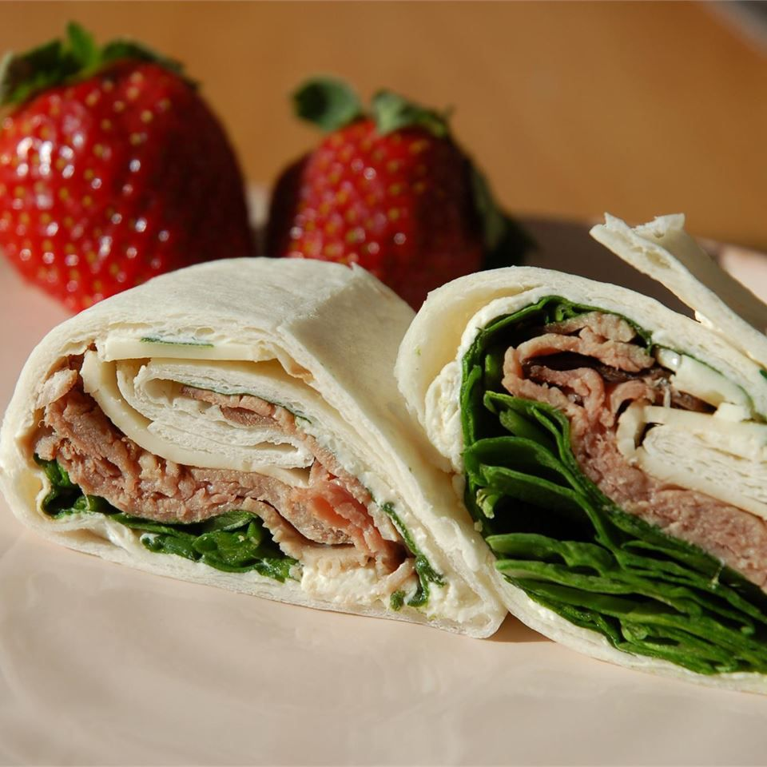

Roast Beef Horseradish Roll-Ups

Roll Ups?
A delicious and tasty snack that's perfect for lunch time!
Ingredients
- 2 (8 ounce) packages fat-free cream cheese, softened
- 3 ½ tablespoons prepared horseradish
- 3 tablespoons Dijon-style mustard
- 12 (12 inch) flour tortillas
- 30 spinach leaves, washed with stems removed
- 1 ½ pounds thinly sliced cooked deli roast beef
- 8 ounces shredded Cheddar cheese
Instructions
- Beat the cream cheese, horseradish, and mustard together in a bowl until well blended.
- Spread a thin layer of the cream cheese mixture over each tortilla. Arrange spinach leaves evenly over the tortillas. Place two slices of roast beef over the cream cheese. Sprinkle with Cheddar cheese, dividing evenly between tortillas. Starting at one end, gently roll up each tortilla into a tight tube. Wrap with aluminum foil or plastic wrap to keep the rolls tight. Refrigerate at least 4 hours.
- To serve for lunch, unwrap and slice into 2 or 3 pieces. Only cut the rolls you will be using that day so the others do not dry out. To serve for parties, unwrap and slice the rolls diagonally into 1 inch sections, and arrange on a serving platter.
Reviews
This recipe was so delicious! I'd recommend it to anyone who's thinking of making it! - Katherine